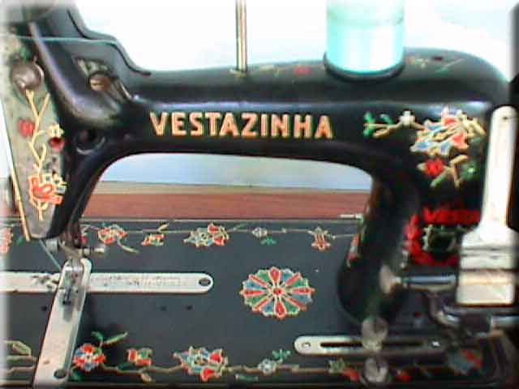

L. O. Dietrich (Vesta)
Maker: L. O. Dietrich, Altenburg, Thüringen
Model: Vestanzinha (badged for Portuguese market)
Serial #:
Date: ?
Front View / Bed Decals / Balance Wheel / Faceplate
Front View
Picture courtesy of Pat Spurr
Bed Decals

Balance Wheel
Faceplate
©
Alan Quinn 2001
Pictures posted on this page may not be reproduced or distributed in part or in whole without the prior written permission of the relevant copyright owner